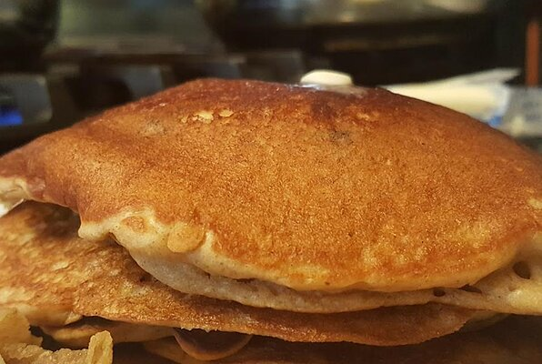

Buttermilk Pancakes
These pankcakes are a homemade favorite. They are simple
to make and very delicious.
Ingredients
- 1 1/4 cups all-purspose flour
- 1 egg
- 1 1/4 cups buttermilk
- 1/4 cups white sugar
- 1 teaspoon baking powder
- 1 teaspoon baking soda
- 1/4 cup vegetable oil
Steps
- Preheat a skillet over medium heat.
Combine all ingredients in blender. Puree until smooth
- Pour batter onto the griddle to form 5 pancakes.
Flip pancakes when edges appear to harden. Cook pancakes
on other side for same amount of time until golden brown.